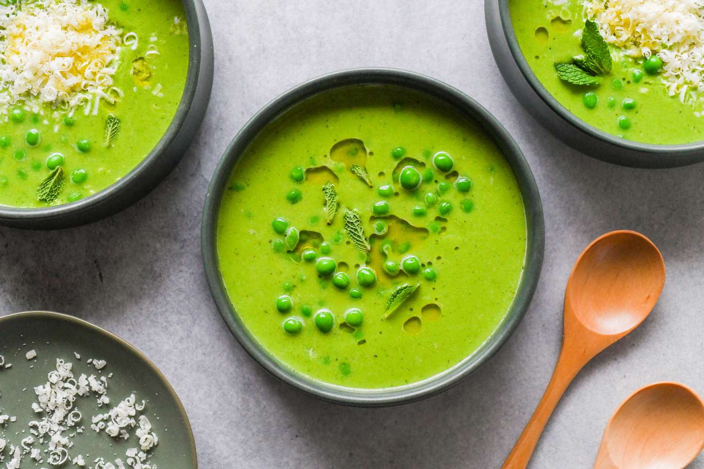

Mint Pea Soup

A delicious, healthy lunch or starter that's great hot or cold.
This easy soup is low in calories, Serve swirled with yogurt.
Ingredients:
- 1 bunch spring onions, trimmed
and roughly chopped
- 1 medium potato, peeled and diced
- 1 garlic clove, crushed
- 850ml vegetable or chicken stock
- 900g young pea in the pod
- 4tbsp chopped fresh mint
- large pinch caster sugar
- 1 tbsp fresh lemon or lime juice
- 150ml buttermilk or soured cream
Method:
- Put the spring onions into a large pan with the potato, garlic and stock. Bring to the boil, turn down the heat and simmer for 15 minutes or until the potato is very soft. For the garnish, blanch 3 tbsp of the shelled peas in boiling water for 2-3 minutes, drain, put in a bowl of cold water and set aside. Add the remaining peas to the soup base and simmer for 5 minutes – no longer, or you will lose the lovely fresh flavour of the peas.
- Stir in the mint, sugar and lemon or lime juice, cool slightly then pour into a food processor or liquidiser and whizz until as smooth as you like. Stir in half the buttermilk or soured cream, taste and season with salt and pepper.
- To serve the soup cold, cool quickly, then chill – you may need to add more stock to the soup before serving as it will thicken as it cools. To serve hot, return the soup to the rinsed-out pan and reheat without boiling (to prevent the buttermilk or soured cream from curdling).
- Serve the soup in bowls, garnished with the remaining buttermilk and the drained peas.